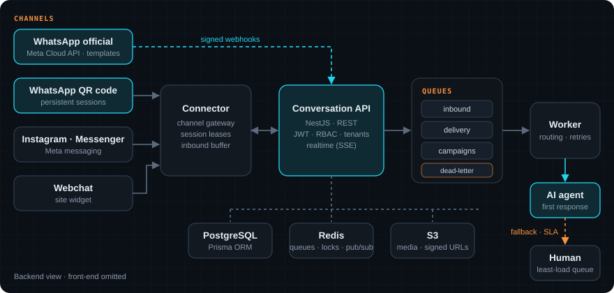

PitStop Connect
CRM omnichannel para oficinas mecânicas e lojas de autopeças, com atendimento por IA. Todas as conversas (WhatsApp, Instagram, chat do site) caem num lugar só, a IA responde primeiro e o atendente humano entra quando precisa. Omnichannel CRM for auto repair shops and parts stores, with AI-first service. Every conversation (WhatsApp, Instagram, website chat) lands in one place, the AI answers first and a human agent steps in when needed.
01Visão geral do backendBackend overview
O produto foi construído por um time; minha parte foi o backend da conversa: como as mensagens entram por cada canal, viram uma conversa única por cliente, passam por filas e chegam à IA ou ao atendente. O backend é dividido em três serviços que escalam de forma independente: The product was built by a team; my part was the conversation backend: how messages arrive from each channel, become one conversation per customer, go through queues and reach the AI or a human agent. The backend is split into three services that scale independently:

AAPI
REST + eventos em tempo real (SSE). Conversas, contatos, canais, permissões e webhooks.REST + realtime events (SSE). Conversations, contacts, channels, permissions and webhooks.
CConnector
Gateway dos canais: mantém as sessões de WhatsApp e traduz cada provedor para um formato único.Channel gateway: keeps WhatsApp sessions alive and translates each provider into one format.
WWorker
Consome as filas: roteamento, entregas, campanhas, transcrição de áudio e resumos por IA.Consumes the queues: routing, delivery, campaigns, audio transcription and AI summaries.
02WhatsApp oficial (Meta Cloud API)Official WhatsApp (Meta Cloud API)
Integração direta com a API oficial da Meta, o caminho recomendado para empresas: número verificado, sem risco de bloqueio e com templates aprovados. Direct integration with Meta's official API, the recommended path for businesses: verified number, no ban risk, and approved templates.
↳Webhooks verificadosVerified webhooks
Mensagens, mídias, status de entrega e leitura, qualidade da conta e opt-out de marketing chegam por webhook assinado.Messages, media, delivery/read status, account quality and marketing opt-outs arrive through a signed webhook.
24hJanela de atendimentoService window
A API respeita a regra das 24h da Meta: fora da janela, só sai mensagem por template aprovado.The API enforces Meta's 24-hour rule: outside the window, only approved templates can be sent.
TTemplates
Sincronização e envio de templates, usados em lembretes de revisão e campanhas.Template sync and sending, used for service reminders and campaigns.
+Onboarding
A oficina conecta o próprio número pelo fluxo de cadastro incorporado da Meta, sem suporte manual.Shops connect their own number through Meta's embedded signup flow, no manual support needed.
03WhatsApp via QR codeWhatsApp via QR code
Muitas oficinas pequenas ainda usam o WhatsApp do celular. Para elas, o sistema conecta o número lendo um QR code, como no WhatsApp Web, e trata essas conversas no mesmo modelo das oficiais. Many small shops still use WhatsApp on a phone. For them, the system links the number by scanning a QR code, like WhatsApp Web, and handles those conversations in the same model as the official ones.
- Sessão persistentePersistent sessionO estado da sessão fica no banco com cache em Redis, não em disco, então o container pode reiniciar sem pedir QR de novo.Session state lives in the database with a Redis cache, not on disk, so the container can restart without a new QR scan.
- Lease de sessãoSession leaseCada sessão tem um "dono" por vez, evitando que duas instâncias usem o mesmo número.Each session has one owner at a time, so two instances never drive the same number.
- Buffer de entradaInbound bufferSe a API estiver fora, as mensagens ficam guardadas e são entregues quando ela volta. Nada se perde.If the API is down, messages are held and delivered once it's back. Nothing gets lost.
- Migração para o oficialMigration to officialQuando a oficina cresce, o canal migra de QR para a API oficial mantendo o histórico.When a shop grows, the channel migrates from QR to the official API and keeps its history.
04API de conversaçãoConversation API
O coração do sistema: transformar mensagens soltas de vários canais em atendimentos organizados. The core of the system: turning loose messages from many channels into organized conversations.
1Uma conversa por clienteOne conversation per customer
Restrição única e locks no banco garantem que mensagens simultâneas não criem atendimentos duplicados. Conversas fechadas reabrem quando o cliente volta.A unique constraint and database locks keep simultaneous messages from creating duplicate tickets. Closed conversations reopen when the customer comes back.
QEntrada por filasQueue-based inbound
Toda mensagem entra numa fila com dead-letter. Picos de volume não derrubam a API, e falhas podem ser reprocessadas.Every message enters a queue with a dead-letter queue. Volume spikes don't take the API down, and failures can be reprocessed.
AIIA primeiroAI first
O agente de IA responde primeiro. Se ele estiver fora do ar ou demorar, a conversa vai direto para a fila humana.The AI agent answers first. If it's offline or slow, the conversation goes straight to the human queue.
⇄Distribuição humanaHuman distribution
Conversas vão para o atendente com menos carga na mesma unidade, com SLA, horário de atendimento e mensagens automáticas.Conversations go to the least-loaded agent in the same unit, with SLA, business hours and automatic messages.
05Segurança e multi-tenantSecurity & multi-tenancy
🔒Negado por padrãoDeny by default
Toda rota precisa declarar quem pode acessá-la; um teste no CI quebra o build se alguma rota ficar sem regra.Every route must declare who can access it; a CI test breaks the build if any route lacks a rule.
#Webhooks assinadosSigned webhooks
Saídas assinadas com HMAC, com retentativas e desligamento automático de destinos que falham sempre.Outbound calls signed with HMAC, with retries and automatic disabling of always-failing destinations.
⚿Segredos cifradosEncrypted secrets
Credenciais dos canais criptografadas no banco e mídias servidas só por URL assinada.Channel credentials encrypted at rest and media served only via signed URLs.